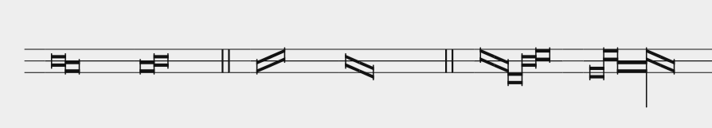
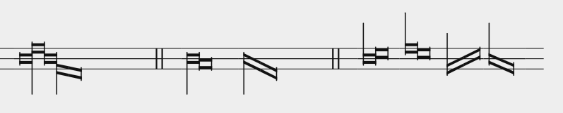

Ligatures are used in mensural notation to write groups of notes. They follow a certain system that is based on the older modal notation and encodes rhythmic patterns based on a few rules. In MEI, we put <ligature> around a group of notes to merge them into a ligature; furthermore, the <note> element may contain a lig attribute for additional control of the ligature form. Generally, ligatures can bind maximae, longae, breves, and semibreves, but none of the shorter note values. Ligatures come in two forms, or combinations of those: recta (resulting in "boxes" instead of note heads) and obliqua (slanted parallelograms). Notes in direct succession must have different pitches.
The simplest ligatures bind two notes. The governing rules can be understood from comparing the rendered MEI with the source code excerpts below.

The rules are as follows (going from left to right):
Possible exceptions to the rule of "middle notes" are maximas – see the penultimate note, an obviously wide rectangle, in the rightmost example –, and notes with stems (caudae) which will be explained in the next subsection.
Here is the relevant snippet of the MEI source code to render the above ligature examples:
<ligature form="recta"> <note dur="longa" oct="4" pname="c"/> <note dur="longa" oct="3" pname="b"/> </ligature> <ligature form="recta"> <note dur="brevis" oct="3" pname="b"/> <note dur="brevis" oct="4" pname="c"/> </ligature> <barLine form="dbl"/><space/> <ligature form="obliqua"> <note dur="longa" oct="3" pname="b"/> <note dur="brevis" oct="4" pname="d"/> </ligature> <ligature form="obliqua"> <note dur="longa" oct="4" pname="c"/> <note dur="brevis" oct="3" pname="a"/> </ligature> <barLine form="dbl"/><space/> <ligature> <note dur="longa" pname="d" oct="4"/> <note dur="brevis" pname="b" oct="3"/> <note dur="brevis" pname="g" oct="3"/> <note dur="brevis" pname="c" oct="4"/> <note dur="brevis" pname="d" oct="4"/> </ligature><space/> <ligature> <note dur="brevis" pname="a" oct="3"/> <note dur="brevis" pname="d" oct="4"/> <note dur="maxima" pname="b" oct="3"/> <note dur="brevis" pname="d" oct="4"/> <note dur="brevis" pname="b" oct="3"/> </ligature>
The basic rules covered above allow only for a limited range of rhythmic expression. By using stems – called "caudae", literally: tails –, notes in ligatures can be modified beyond these.

Caudae modify the note values according to the following rules:
<ligature> <note dur="longa" pname="c" oct="4"/> <note dur="brevis" pname="e" oct="4"/> <note dur="longa" pname="c" oct="4"/> <note dur="brevis" pname="a" oct="3"/> <note dur="brevis" pname="g" oct="3"/> </ligature> <barLine form="dbl"/><space/> <ligature form="recta"> <note dur="brevis" oct="4" pname="c"/> <note dur="longa" oct="3" pname="b"/> </ligature> <ligature form="obliqua"> <note dur="brevis" oct="4" pname="c"/> <note dur="longa" oct="3" pname="g"/> </ligature> <barLine form="dbl"/><space/> <ligature form="recta"> <note dur="semibrevis" oct="4" pname="c"/> <note dur="semibrevis" oct="4" pname="d"/> </ligature> <ligature form="recta"> <note dur="semibrevis" oct="4" pname="e"/> <note dur="semibrevis" oct="4" pname="d"/> </ligature> <ligature form="obliqua"> <note dur="semibrevis" oct="3" pname="a"/> <note dur="semibrevis" oct="4" pname="d"/> </ligature> <ligature form="obliqua"> <note dur="semibrevis" oct="4" pname="c"/> <note dur="semibrevis" oct="3" pname="a"/> </ligature>
The ligature rules presented above work the same for either Tempus. For Tempus perfectum, the "grouping" mechanics for perfection and alteration are applied as usual.
Just as non-ligature notes, parts of a ligature can receive dots for augmentation.
Lastly, Color may be applied to parts of a ligature as well. Depending on the time and context, Color expresses either dotting, triplets, a hemiola, or just smaller note values.